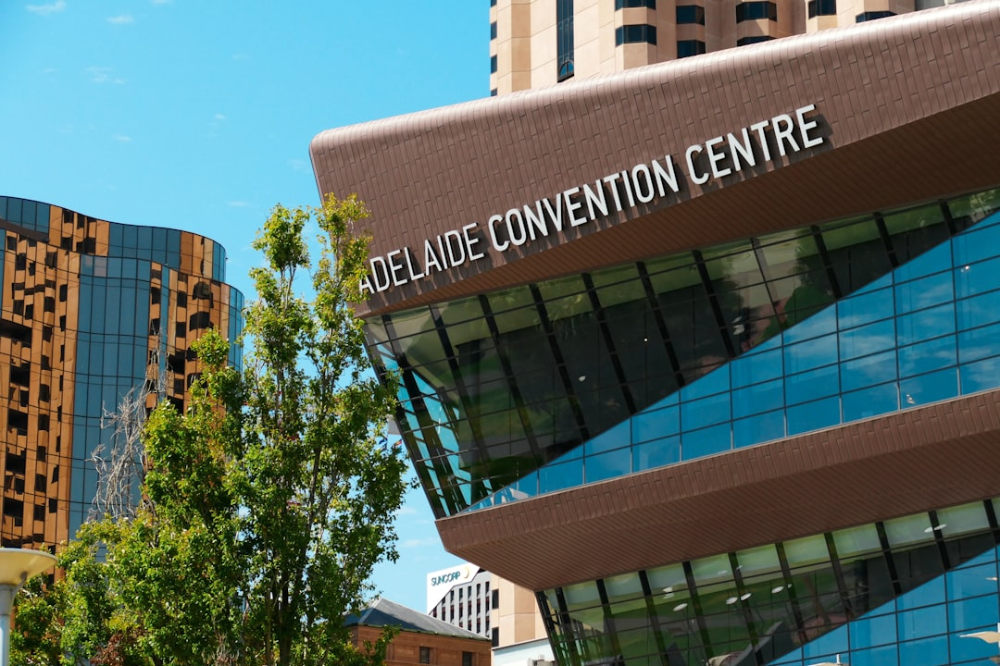

An Adelaide earthworks brief should give at least six useful details: intended result, approximate dimensions, access measurements, known ground conditions, plans and photos. The source material identifies six work types: site cuts, trenching, land clearing, soil removal, driveway and shed pad preparation, and pool or tight access excavation. For a small deck, shed pad or garden terracing, actual machine time is often a day or two when access is straightforward and the soil is not rock.
For homeowners and builders comparing earthmoving contractors adelaide options, the useful starting point is the site outcome, access path, levels, ground conditions and spoil plan.
Earthmoving Contractors Adelaide Explained
Earthmoving Adelaide frames the first step as a project review, with the useful starting point being the result rather than the machine name. A contractor needs to know whether the work is for a building pad, service trench, cleared area, driveway base, shed pad, pool excavation or tight access backyard job.
The early enquiry should keep separate decisions separate. Engineering, approvals, contractor selection and the final written quote remain outside the first review. Send enough detail for a contractor to decide whether the job needs plans, a site visit, service information or a more detailed scope before price is discussed.
- State the finished result before naming equipment.
- Give approximate dimensions and designed levels if known.
- Describe where machines can enter, turn, load and leave.
- Flag sand, reactive clay, fill, rock or unknown ground where observed.
- Separate excavation, cartage, materials, testing and approval responsibilities.
Access Is More Than Gate Width
Access affects the job method. The source page says gate width alone is not enough because turns, overhead clearance, surfaces and the loading route also shape what can happen on site. A narrow entrance may still be workable, but it can change plant choice, movement speed and spoil handling.
For established properties, pool excavations, courtyards and small backyard works may need compact plant. Older Adelaide suburbs with tight laneways or limited access may also require extra time for smaller machines and more trips to remove spoil. Photos from the street, driveway, side path and work area are useful because they show constraints that measurements can miss.
A practical access note answers three questions: where can the machine enter, where can material be loaded, and what has to be protected along the route.
Ground, Services and Spoil Questions
Ground condition changes the work plan. Sand, reactive clay, fill and rock are named as conditions that can affect plant, stability, time and disposal assumptions. Visible clues are worth recording, including exposed rock, imported fill, damp areas, old rubble, steep fall or previous retaining work.
Buried services need an early check. Current asset information and site specific locating should be used before excavation starts. For trenching, drainage shaping, foundations or clearing, ask whether the proposed work area has been checked against relevant service information before digging begins.
Spoil should be treated as its own quote item. Soil removal and cartage may involve loading, separation and lawful cartage of clean spoil, rubble and excavated material. If material is staying on site, nominate where. If it must leave, ask whether cartage and disposal are included.
Who This Applies To
This guide is for people preparing residential earthworks enquiries in metropolitan Adelaide, including the inner suburbs, foothills, northern, western and southern growth corridors, Mount Barker and Aldinga Beach. It does not replace engineering, council, PlanSA, building or trade advice where those decisions apply.
A house site or shed pad brief should focus on designed levels, building pad preparation, cut and fill assumptions, compacted base needs and whether retaining sits inside the wider project. A trenching and drainage enquiry should describe the route, depth if known, stormwater shaping intent and any buried asset checks already completed.
For driveway or hardstand preparation, separate excavation, grading and compacted base preparation from later paving, concrete or surface work. For land clearing, list vegetation, debris or unsuitable surface material to be removed before construction or landscaping. Readers comparing broader earthmoving services in Adelaide can use the same brief structure across work types.
Quote Inclusions to Confirm
Costs vary with machine size, job complexity, access, ground conditions, operator time and disposal. Smaller residential jobs may be priced as a complete scope rather than only an hourly rate, so written inclusions are more useful than an assumed Adelaide average.
Ask what is included, what is excluded and what could change after inspection. A quote may not automatically include cartage, imported material, testing, approvals, engineering, retaining walls or downstream trade work. If the project involves sloping ground, the foothills or a new house build, clarify how cut and fill, spoil and possible retaining are handled in the wider scope.
Approval questions belong near the start. Approval depends on the property, planning rules and proposed work, and a small looking excavation is not automatically exempt. Check with the relevant council or PlanSA where earthworks could affect neighbouring land, retaining walls, stormwater, protected features or form part of building work.
- Define the result. Write the finished outcome first, such as a pad, trench, driveway base, cleared area or pool excavation.
- Measure access. Record gate width, turns, overhead clearance, surface condition and the loading route.
- Describe the ground. Note visible sand, clay, fill, rock, slope, rubble or unknown conditions for contractor review.
- Check services. Use current asset information and site specific locating before excavation starts.
- Separate inclusions. Ask for excavation, cartage, materials, testing, approvals and downstream trade responsibilities to be separated in writing.
| Project situation | Brief the contractor needs | Quote item to confirm |
|---|---|---|
| Site cut or foundation preparation | Designed levels, dimensions, access and known ground condition | Excavation, cartage, testing and approvals as separate items |
| Trenching or drainage excavation | Route, service checks, stormwater shaping intent and access | Responsibility for asset locating and reinstatement boundaries |
| Driveway, shed pad or hardstand | Finished use, approximate area, grading need and base expectation | Whether compacted base preparation is included |
| Pool, courtyard or tight access job | Gate, turns, overhead clearance, loading route and photos | Compact plant allowance and spoil removal trips |
Common questions
What should I send before asking for an earthworks quote? Send the suburb, intended result, approximate dimensions, access measurements, known ground conditions, plans and photos. Those details make the first review more useful.
Is a small Adelaide excavation automatically exempt from approval? No. Approval depends on the property, planning rules and proposed work, and a small looking excavation is not automatically exempt.
Why can two contractors price the same job differently? Cost can vary with machine size, job complexity, access, ground conditions, operator time and disposal. Written inclusions show whether cartage, materials, testing or approvals are included.
How long can a small backyard excavation take? For a small deck, shed pad or garden terracing, actual machine time is often one or two days if access is straightforward and the soil is not rock.
This guide covers practical scoping questions for Adelaide excavation, site preparation, access, spoil and quote comparison before contractor review.